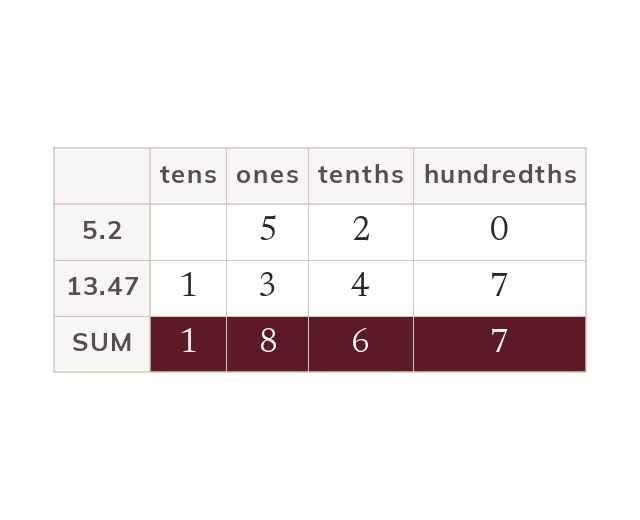

Line up the points
Line up the decimal points to add or subtract. Each digit then sits in its own column. A zero in a gap keeps the columns straight.
Decimals are added and subtracted with their points lined up, so each digit sits in its own place value column. A zero written in a gap keeps the columns straight.